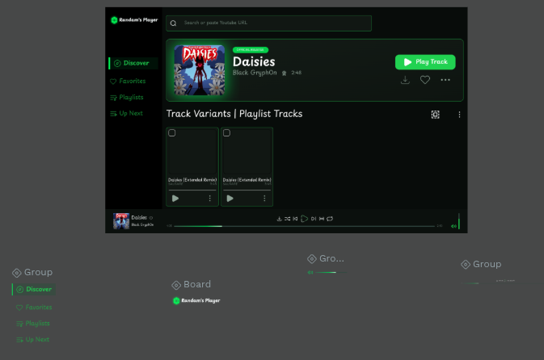
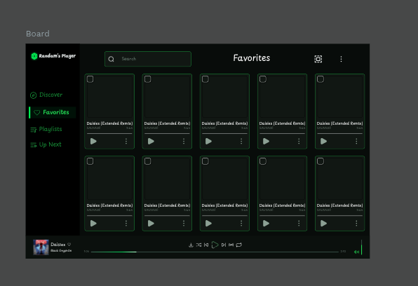
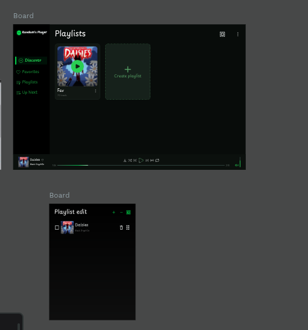
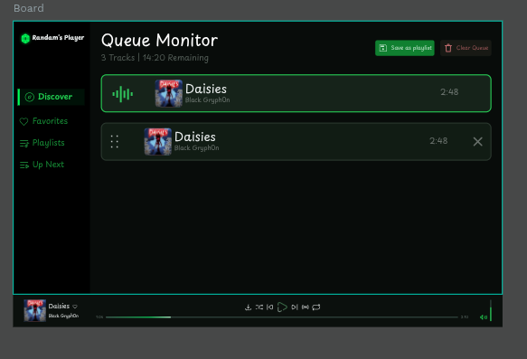
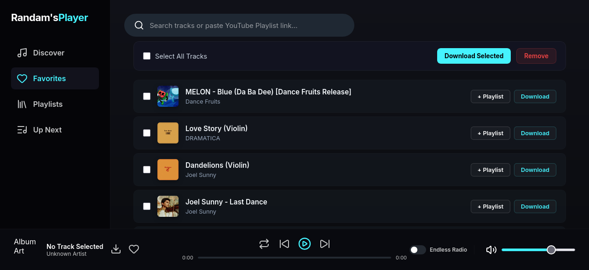

Randam's Player
A music player, built to replace cluttered streaming web apps. Designed in Penpot. Offline-first, with drag-and-drop queue reordering and dense multi-select actions, adaptable from desktop down to mobile.
Why Rebuild the Music Player?
Mainstream streaming apps bury queue management in menus and push algorithmic recommendations. The goal here was a library-first interface: fast, and built around direct queue control.
"The design goal: give listeners direct control. Queue reordering, multi-track batch downloads, and local storage — no login required, no memory bloat."
Queue Reordering & Feedback
- Native drag-and-drop live queue reordering
- Real-time remaining time and duration estimation
- Animated equalizer indicator on the active track
Batch Actions & High Density
- Integrated checkbox selection matrix across card grids and lists
- One-click batch queue addition and sequential downloads
- Local-first playlists stored purely in client-side LocalStorage
Workspace Boards & Component Hierarchies
Each core view was structured inside Penpot to validate component tokens, auto-layout groups, and information density before implementation.




Refining Information Density (V1 vs V2)
Early iterations had visual friction. Comparing the original table layout to the card grid shows why it changed.


Same System, Smaller Screen
The same queue logic, multi-select, and local storage carry over to a single-column mobile layout, with the bottom dock reflowing into the mobile tab bar.


Dark Base & Green Accents
A dark base reduces eye strain during long listening sessions. Green indicators mark the actionable controls.